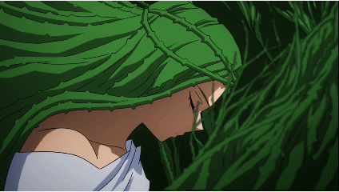

Su informacion principal
Nombre: Ibara Shiozaki

Quirk: Enredadera
El Quirk de Ibara le permite crear vides extensibles de su cabello, con las cuales puede atacar y coger objetos.
Wiki con informacion mas detallada de Ibara
El Quirk de Ibara le permite crear vides extensibles de su cabello, con las cuales puede atacar y coger objetos.
Wiki con informacion mas detallada de IbaraAtaque en el que estira y expande su cabello de enredadera.
Cuando usa el modo de puntería, el pelo se endurece, lo que aumenta el alcance y la potencia de su ataque.
Ataque en el que estira y expande su cabello de enredadera.
En espacios reducidos, se estira rebotando en los muros.
Ataque con el que atrapa a los enemigos que tiene frente a ella usando su cabello.
Los enemigos atrapados no podran moverse y recibiran True Damage.
Rodea a un aliado abatido con su cabello de enredadera, reviviendolo instantaneamente.
| Habilidad | Daño | Cargas |
|---|---|---|
| Alpha | 80(PerBullet) | 4 |
| Beta | 60(PerHit) | 2 |
| Gamma | 225 | 1 |
| Especial | 0 | 2 |